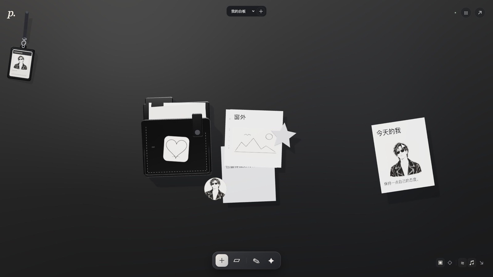
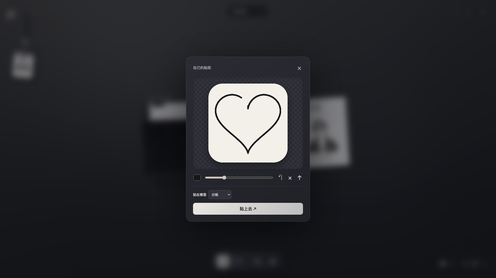

FEATURED · v1.1.0 悬停查看贴纸 →你好，我是 Bobs，一个会写代码的新手开发者。JavaScript、HTML、CSS 我都能自己动手写，也能读懂、改动别人的代码。不过说实话，还有不少东西我不太会：算法要查，复杂的报错要问，大一点的架构也还在摸索。但我很喜欢“把脑子里的想法变成能点、能用的东西”这个过程。
我写代码离不开两个搭档：Codex 和 Claude Code。我自己写核心逻辑，把想做的效果描述清楚，让 AI 帮我搭框架、补细节，然后我一行行读、一处处改。看不懂的地方就追着问“为什么这么写”，每做完一个功能，自己就多懂一点。
就这样，我做出了第一个正经作品「纸间 Paperroom」：一块黑色皮面的 3D 白板笔记，能放便签、文件夹、手绘贴纸，还能录磁带。它有网页版，也有用 Swift 打包的 Mac 版，代码全部开源。对新手来说，能把它发布出来，我自己都挺意外的。
不写代码的时候，我经常跑去香港旺角。霓虹招牌、街市、人挤人的西洋菜南街，这种热闹的街头氛围特别能给我灵感，所以这个博客的背景也选了旺角的夜街。
我会把做东西的过程发到 B站，踩过的坑、学到的东西都会记录下来。如果你也是新手，欢迎一起交流。右下角那只果冻叫「啵啵」，它目前还在开发中，还没接入真正的 AI，只能回答几个预设问题。
我会写代码，但新手最怕的还是“不知道从哪下手”。我的办法是自己写、自己改，再把 Codex 和 Claude Code 当成耐心的老师兼搭档，按下面这个流程一点点往前推。
用大白话描述效果，比如“一块黑色皮面的白板，便签可以拖来拖去”。描述越具体，第一版越靠谱。
Codex 和 Claude Code 帮我把项目结构和基础代码写出来，我先让它跑起来再说。
打开浏览器看效果，哪里不对就截图、描述给 AI，让它改。纸间的很多细节就是这样一轮轮磨出来的。
看不懂的代码，我会问“这一行是干嘛的”“为什么不用另一种写法”。这是我学得最快的方式。
功能稳定了就推到 GitHub、打个版本号，再把过程整理成 B站视频。
适合把一个明确的小任务交出去，比如“给这个按钮加个动画”“把这段逻辑改成函数”，改完我再看。
在终端里直接读整个项目，适合问“这个项目是怎么组织的”，或者让它一口气改好几个文件、跑测试。
旺角是全世界人口密度最高的地方之一，招牌一层叠一层，夜里比白天还亮。我经常去那里走走，下面是去旺角绝对不会错过的几条街。
行人专用区，晚上有街头表演，人最多也最热闹。
一整条露天摊位，小饰品、衣服、手机壳，砍价是传统。
球鞋店一家挨一家，喜欢鞋的人能逛一下午。
老式霓虹招牌最集中的地方之一，拍夜景很出片。
超长的通天扶梯，逛累了上去吹空调。
鱼蛋、烧卖、鸡蛋仔、碗仔翅，边走边吃才是旺角的正确打开方式。
挑一个最得意的放在最前面。纸间用 MIT 协议开源，欢迎来点个 Star，也欢迎提 Issue。


FEATURED · v1.1.0 悬停查看贴纸 →点开皮质文件夹，纸张以真实三维浮起。超过 6 张可以翻组，关闭时轻轻回落。
按真实尺寸 100.4 × 63.8 × 12 mm 建模，带盘以 4.76 cm/s 线速度转动，单盘最长 15 分钟。
画笔可调颜色和粗细，支持撤销和导入图片。贴纸能附着在文件夹上一起拖动。
顶部切换白板，＋ 新建一块。每块白板独立保存，还会记住你最后打开的那块。
左上角的工牌有绳段约束、重力和惯性，可以用鼠标、触摸或方向键甩着玩。
物理材质加两组矩形柔光灯，皮面有微纹理和清漆高光，后期加 SSAO 接触阴影。
v1.1.02026-09-29 · 新版 Mac 安装包v1.0.02026-09-28 · 首个正式版，附宣传片数据保存在当前浏览器，输入停止 350ms 自动保存备份右上角 ↗ 导出 JSON，录音一起打包free ai browser。一个免费的 AI 浏览器实验项目。
正在白板上打草稿。想看什么，在 B站评论区或者 GitHub Issue 告诉我，说不定就是下一个。
开了 haha362636-coder 这个账号，开始把作品放到网上。
公开了 JavaScript 项目 browserpro，尝试做一个免费的 AI 浏览器。
首个正式版发布：网页版 + Mac 安装包，还剪了一支宣传片。
第二天就发了新版，Mac 安装包附带 SHA-256 校验文件。
把作品和 B站放到一起，顺便请了一只果冻导游。
开发过程、项目演示和一些乱七八糟的想法，都在这里更新。
我自己会写代码，再加上 Codex 和 Claude Code 帮忙。我负责想清楚要什么、写和改代码、反复试和挑毛病，AI 帮我搭框架、补我还不会的部分、解释看不懂的地方。整个过程本身就是我学习的方式。
不用。纸间是 MIT 协议的开源项目，网页版打开就能用，Mac 版也可以免费下载。
安装包是 ad-hoc 签名，没有经过 Apple 公证。到「系统设置 → 隐私与安全性」底部点「仍要打开」就行。目前只支持 Apple Silicon、macOS 14 及以上。
不会。数据只保存在你当前的浏览器或设备里，网页版和桌面版也互相独立。换设备前，用右上角 ↗ 导出 JSON 备份。
还不是。啵啵目前在开发中，还没有接入真正的 AI，只会按关键词回答几个预设问题。之后会慢慢把它变聪明。
可以去 支持页面，那里有赞助入口。给纸间点 Star、去 B站一键三连，也一样是支持。
可以去 B站 私信，或者在 GitHub Issue 留言。